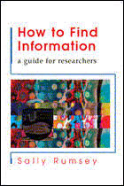

|  |
| About IR |
| Editors |
| Author instructions |
| Copyright |
| Author index |
| Subject index |
| Search |
| Reviews |
| Register |
| Home |
Rumsey, Sally. How to find information: a guide for researchers. Maidenhead: Open University Press, 2004. ISBN 0 335 21428 2. £17.99
Sally Rumsey has produced a concise and elegant guide for researchers comprising the topics that earlier were included into what was known as 'library research'. She provided not only instructions on how to use modern libraries and other available information sources, but also illustrated the complexity of modern information world in which researchers are immersed. The changing situation in providing information for research in various libraries and, in general, the changing scene of scholarly communication is reflected in the book. At the same time the author manages to keep the whole book clear and practical. This allows young researchers to use it as a handy desk-top handbook and the supervisors of doctoral students as a convenient teaching aid. Without any doubt, it also can be useful to anyone doing research and writing scholarly papers.
The book consists of seventeen chapters starting with explanation of information gathering process as such and the main stages involved. This process is compared to the strategic military campaign and the 'battle' charts are used throughout the book to visualise the consequent tactics. It covers topics like: explaining the usage of a modern library, the proliferation of various formats of sources, information need, resource discovery and various types of searching process, accessing materials (including possibilities of the Open Access Initiative), evaluation of resources, citing and plagiarism, and some basic advise on keeping up to date and keeping records while using research information.
Every chapter starts with an outline and is finished with the 'key points'. The body of each chapter is broken into logical portions under transparent headlines and includes simple explanations of involved concepts as well as practical advice.
The text is accompanied by a glossary, bibliography, list of Web sources and an index. The whole structure is professional and well-thought through, easy to handle.
I would recommend each university library to get it for their graduate and research students as well as for the benefit of all researchers.
Dr. Elena Macevičiūtė
Vilnius university, Lithuania and
Swedish School of Librarianship and Information Studies
Borås, Sweden
April, 2005
How to cite this review
Macevičiūtė, E. (2005). Review of: Rumsey, Sally. How to find information: a guide for researchers. Maidenhead: Open University Press, 2004. Information Research, 10(3), review no. R176 [Available at: http://informationr.net/ir/reviews/revs176.html]